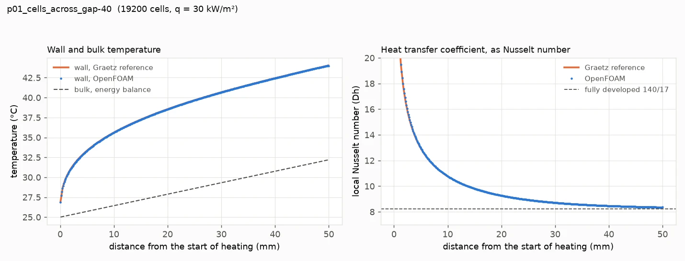

Study 12 · CadQuery, Gmsh, CalculiX and SciPy, driven by the agent
Bracket optimisation loop
The search as it happened. Each frame is one candidate, with its CalculiX stress, where it sits in the design space and the mass so far. Candidate 8 went too thin, deflected beyond what a linear model can handle, and was thrown out by the checks.
The question. The steel bracket from study 1 (200 mm long, 20 mm wide, 1 kN at the tip) now sits in a vibrating assembly, so its bending stress is limited to 100 MPa for fatigue, and the tip can deflect at most 1.0 mm. The width is fixed by the mounting. Which linear taper, meaning which root and tip heights, makes it as light as possible?
A 26.0 mm root tapering to 8.7 mm at the tip, at 546 g. That's 30 % lighter than the straight 20 × 25 mm bar it started from (785 g), which was the lightest straight bar that meets both limits. Stress is the limit that governs, and it peaks in the middle of the span at 99.5 MPa, not at the root, where it's only 88 MPa. The tip moves 0.917 mm, so deflection isn't the limiting factor.
The answer holds once mesh error is included. At the optimum, going from 4.5 mm to 2 mm elements moves the peak stress by 0.013 MPa. I had the optimiser work to a 0.5 % margin on each limit, and the converged stress still sits 0.49 % under 100 MPa.
The starting bar and the optimum on one stress scale. Most of the straight bar is lightly loaded. The taper keeps its top surface close to the limit along most of the span, so nearly all of the steel is doing work.
How it works
An optimiser (COBYLA, which doesn't need gradients and handles constraints) proposes a root and tip height. For each candidate the harness builds the solid in CadQuery, exports a STEP file, meshes it with quadratic tetrahedra in Gmsh, solves it in CalculiX and runs every check of the study, exactly as it would for any other case. A candidate that fails a check counts as infeasible whatever its numbers say, so the optimiser can never be steered by a result the checks have rejected. The whole search is one command, and it converged in 32 candidates.
How I checked it
Every candidate goes through the full set of checks. The CAD volume is compared with the closed form, the applied load and tip area are read back from the mesh, and the reactions have to balance. The tip deflection has to match tapered Timoshenko beam theory, which it does within 0.6 %, and the FE surface stress has to match M/Z along the span, within 0.7 % as a fit and 1.5 % point by point.
A separate mesh study at the optimum puts the mesh uncertainty at 0.005 % on the stress and 0.016 % on the deflection, and the requirement is still met with that added.
I also optimised the bracket independently with beam theory, using the same limits and margin. It lands at 545.2 g against the FE optimum's 546.0 g, a 0.13 % difference, with the heights within 0.7 %.
I wrote down predictions before running it (the heights, the mass, which limit would govern and where the stress would peak), and they all held.
Why measuring the stress properly matters
Candidate 12 is the trap. Its root stress is 90 MPa, comfortably under the limit, but it peaks at 101 MPa in the middle of the span.
Once the taper is steeper than 2 to 1, the bending stress peaks inside the span rather than at the root. An optimiser that only checked the root would have kept thinning the tip and handed back a bracket that fails in the middle. The peak right at the clamped corner can't be used either, because it grows without limit as the mesh gets finer, which is the trap from study 1. So the study measures the FE surface stress against M/Z in the smooth part of the span and takes the peak along the whole length.
What I caught along the way
Candidate 8 took a long step to a 390 g design that deflected 2.7 mm, 1.35 % of the span. That's past the small-deflection limit of a linear analysis, so the checks rejected it, and the optimiser treated it as infeasible and stepped back. The run is kept as evidence.
The optimiser drives the stress right onto the limit at whatever mesh size it's using, so without a reserve, a finer mesh could tip the answer over. I set the 0.5 % margin before running, and the confirmation mesh study measured the actual error at 0.005 %.
It's a linear taper only, so a curved profile would be lighter still. The joint at the root needs its own assessment, and there's no lateral-torsional buckling check yet.
Structures and vibration
Study 1 · FreeCAD, Gmsh and CalculiX
Cantilever bracket, 3D finite elements
Von Mises stress on the deformed bracket, rendered in Blender from the CalculiX results. It's highest at the clamped end and drops to zero along the middle of the section.
The same result from all sides. At the clamped end you can see the bending stress across the section, highest at the top and bottom faces.
The question. A steel bracket, 200 mm long and 20 × 20 mm in section, takes a 1 kN load at the tip. Does it stay under 1.0 mm of deflection and 213 MPa of stress, and how far can I trust the model?
Yes, with room to spare. The tip moves 0.953 mm and the bending stress at the root is 150 MPa. The mesh uncertainty is about 0.02 %.
How I checked it
The deflection falls between the two standard beam-theory answers, 0.952 mm without shear and 0.960 mm with it. That's where a fully clamped solid bar should land.
The support reactions add up to the applied load, to within rounding.
As I refine the mesh, the answer converges at the rate these elements should give, and that's where the 0.02 % comes from.
The peak stress right in the clamped corner keeps climbing as the mesh gets finer, from 150 to 217 MPa. A perfectly sharp corner does that in any model, so I don't use it. The stress I report comes from the smooth part of the beam, and it matches beam theory at 150 MPa.
Deflection and stress along the beam, next to beam theory.
The same study run with the simplest elements. The checks held back every result.
What I caught along the way
I also ran it with the simplest element type, linear tetrahedra. The bracket came out 4 to 33 % too stiff and the stress 7 to 45 % too low, so at face value it would have looked comfortably safe. The beam-theory and mesh checks both failed, and none of those results were reported as verified.
Study 2 · CadQuery, Gmsh and CalculiX
Cable hole in a strap, CAD to FEA
Axial stress over the whole strap and up close at the hole. The peak sits on the two sides of the hole, at right angles to the load.
The question. A 6061 aluminium strap, 40 mm wide and 4 mm thick, carries a 5 kN pull, and a cable needs to pass through a hole drilled in the middle. How big can the hole be before the stress at its edge goes over a 120 MPa fatigue allowable?
Largest hole about 16.7 mmWithin 0.6 % of the handbookMesh uncertainty 0.08 %
About 16.7 mm. A 16 mm hole passes at 117 MPa and an 18 mm hole fails at 125 MPa. I'd call out 16 mm, or 14 mm if there's any doubt about the allowable, which gives 8 % margin.
It makes a useful contrast with the bracket. The peak at a smooth hole edge is a real number that settles down as the mesh gets finer, while the peak at a sharp corner never settles. Telling those two apart is a big part of doing a stress check well.
How I checked it
The whole chain is scripted. CadQuery builds the part and writes a STEP file, Gmsh meshes it with small elements around the hole, and CalculiX solves it. Trying a new hole size means changing one number.
The stress concentration factor converges to 2.436, within 0.6 % of the value in Peterson's handbook. I'd written down what I expected before running, and all seven hole sizes came in within about 0.6 % of those numbers.
Run through the same pipeline, a hole in a very wide plate gives three times the remote stress to within 0.1 %, which is the exact answer. That case now runs as an automatic test.
The reactions balance the load, and the stress across the section next to the hole adds up to the full load within 0.2 %.
Going from 1 mm down to 0.125 mm elements at the hole edge converges at the expected rate, with 0.08 % uncertainty left.
Stress around the hole, and across the section beside it, against the handbook peak.
Peak stress at the hole edge for each hole size, with the 120 MPa allowable.
What I caught along the way
My first version converged beautifully, with a tiny mesh uncertainty, to a number 2 % above the handbook. The wide-plate test case should have been exact, but through the same pipeline it came out 1.5 % high. It turned out the solver's plane-stress elements behave partly like a thick 3D slab at this thickness. Modelling a thin slice with the load scaled to match fixed it. A clean mesh study on its own would never have shown that.
The first trial run also hit three setup problems. The solver couldn't read the number format I was writing, one CAD face pointed the wrong way so every element got rejected, and a remeshed model was still pointing at the old node numbers. That last one would have run and balanced its forces anyway, which is exactly why it's worth checking for.
Study 3 · CalculiX feeding a stress-life calculation
Strap fatigue life, chained analysis
Cyclic stress amplitude for the 0 to 5 kN service cycle. It peaks at the sides of the hole, which is where a crack would start.
The question. Take the strap from study 2 with its 16 mm hole. In service it sees a load from zero up to 5 kN and back, roughly ten million times. With a scatter factor of 3 on life, does it last, and what cyclic load could I rate it for?
Service life about 8 × 10⁹ cyclesRated to 7.8 kN cyclicMaterial data spread: 7.8 to 9.9 kN
It lasts easily. At the 0 to 5 kN service cycle the predicted life is about 8 × 10⁹ cycles, around 270 times what's needed. The highest cyclic load that still gives 3 × 10⁷ cycles is about 7.8 kN. Each of the two published data sets on its own gives either 7.8 or 9.9 kN, so I'd quote the lower figure and explain why.
How I checked it
Each load case reruns the verified strap model to get the stress at the hole edge, and that model's own checks come along with it. Peterson's notch sensitivity gives a fatigue notch factor of 2.15, a Smith-Watson-Topper correction accounts for the load never reversing, and an S-N curve gives the life.
The S-N curve is fitted to 25 published test points for 6061-T6 (Chung and Abel 1988, and Brodrick and Spiering 1972, from the University of Waterloo fatigue database) rather than copied out of a table.
All of that test data is short-life, so ten million cycles is an extrapolation. As a cross-check, the fitted curve extended to 10⁹ reversals lands within 2.4 % of ASM's separately published value of 96.5 MPa at 5 × 10⁸ cycles.
Every life converts back to its stress amplitude exactly, and the notch stays elastic at every load, reaching at most 81 % of yield.
The published test data, the fitted curve, ASM's long-life value and the service cycle.
Fatigue life against peak cyclic load, with the required 3 × 10⁷ cycles.
What I caught along the way
The two published data sets predict lives about 100 times apart at the service load. That's normal in fatigue, where a 10 % change in stress shifts the life by a factor of about 3.4. It's why I give a load rating with its spread instead of a single life number.
Study 10 · Gmsh and CalculiX, nonlinear contact
Roller-on-plate contact
Von Mises stress from the CalculiX results. The highest stress sits just under the surface in both parts.
Contact pressure across the patch and shear stress below its centre, both sitting on the exact Hertz curves.
The question. A hardened steel track roller, 100 mm in diameter, runs on a steel plate and carries 500 N for every millimetre of its width. Does the peak contact pressure stay at or under 650 MPa? And does the maximum shear stress below the surface, where rolling-contact fatigue cracks start, stay at or under 200 MPa?
Yes on both. The peak contact pressure is 609 MPa and the maximum shear below the surface is 184 MPa, about 0.4 mm down. That leaves 6 % and 8 % of margin. The contact patch is 1.05 mm wide.
How I checked it
The roller and plate are separate parts that only touch, and CalculiX works out where they're in contact as it solves. I push the roller down a set distance and read the force from the reactions, which is more reliable than applying a force before the parts are touching.
Hertz theory gives the exact contact pressure and the stresses underneath. Compared at the load the model actually carried, 501.1 N/mm, the contact half-width matches to 0.005 %, the peak pressure to 0.4 %, and the depth of maximum shear to within 2 % of one element.
The force on the roller and the reaction under the plate balance exactly. The pressure added up across the patch accounts for the load within 2.2 %, and the surfaces overlap by less than a ten-thousandth of how far the roller was pushed.
I used contact elements of 0.08, 0.04 and 0.02 mm. The two coarser meshes fail some of the Hertz checks, as you'd expect, so the answer comes from the finest one. Mesh uncertainty is 1.2 % on the pressure and 0.15 % on the shear.
What I caught along the way
My first try read the pressure from the element stresses at the surface. That came out 3.5 to 6.5 % high, and it added up to more than the load I'd applied. CalculiX's own contact pressure output was within 0.2 % of Hertz on the same mesh, so that's what the study uses.
The maximum shear agreed across the meshes to 0.06 %, yet the convergence check said it was diverging. I was taking the largest value at any node, and which node lands closest to the true peak changes from mesh to mesh. I left the tolerance alone, changed the measurement to find the peak between nodes, wrote down what I expected first, and kept the failed run. It now passes at 0.15 %.
The first mesh was almost eight times bigger than it needed to be, because the fine region spread across the whole model. That meant 70,820 nodes and 3.5 minutes per solve. Keeping the fine mesh near the contact brought it down to 9,334 nodes and 20 seconds, with the same answer to 0.2 %.
Study 4 · CadQuery, Gmsh and CalculiX, modal analysis
Bracket arm vibration, modal analysis
The question. A steel bracket arm, 150 by 25 mm, bolts on near an engine whose second order reaches 200 Hz at 6000 rpm. Its first natural frequency needs to stay above 250 Hz for 25 % separation, and it has to weigh 220 g or less. How thin can it be?
7 mm: first mode 261.7 Hz206 g, within budgetMesh uncertainty 0.03 %
7 mm. At 6 mm the first mode drops to 224 Hz, right in the band I'm trying to stay out of. At 8 mm it's 299 Hz, but the arm weighs 236 g and goes over budget. 7 mm is the only whole-millimetre thickness that does both.
The first four mode shapes from CalculiX. Each one is identified automatically from its effective mass.
The same four modes rendered in Blender. The colour shows how far each point moves.
How I checked it
I built a separate 1D Timoshenko beam model and tested it against the textbook frequencies first. It agrees with the 3D bending modes within 0.9 % and with the in-plane mode within 0.4 %.
The first mode shape matches the beam model almost perfectly, with a modal assurance criterion of 0.99999, and its effective mass is within 0.002 of the textbook 61.4 %.
The torsion mode comes out 3.3 % above the simple twisting formula. I expected that, because the clamp stops the root from warping.
Every thickness landed within 0.7 to 0.9 % of the values I wrote down before running.
What I caught along the way
One of my predictions was wrong. The frequencies converged more slowly than the textbook rate, because the clamped corners are singular. Slower convergence still gives an honest uncertainty, 0.03 % here. Convergence much faster than the textbook rate would have been the real warning sign, and the checks now flag that automatically.
Thermal and fluids
Study 5 · OpenFOAM
Coolant channel pressure budget
Velocity across the passage from the 3D check. It's flat over most of the width and drops to zero at the side walls. The volume under this surface has to equal the flow rate, and the render check confirms it does.
The question. A cold-plate passage is a 1 mm gap between two plates, 20 mm long, with water flowing at about 0.1 m/s. It gets a 30 Pa share of the pump's pressure budget, and it needs at least 0.5 Pa of shear on the walls to keep fouling down. Does it meet both if the gap can vary by ±0.05 mm and the coolant can be anywhere from 15 to 40 °C?
Over budget at nominalNo gap meets both requirementsMesh uncertainty 0.04 %
No. At nominal conditions it needs 33.4 Pa, 11 % over budget. Across the tolerance range it needs anywhere from 28 to 42 Pa, and with warm coolant the wall shear drops to 0.43 Pa.
The two requirements pull against each other. To stay inside the pressure budget with cold coolant, the gap has to be at least 1.078 mm. To keep enough wall shear with warm coolant, it can't be more than 0.885 mm. No gap does both. I predicted those two limits before running them, and the confirmation runs came back at 30.02 Pa and 0.500 Pa.
So the fix has to come from the design side. The options are a narrower coolant temperature range, a bigger pressure budget, a different flow split between channels, or a second look at the shear guideline.
How I checked it
The model is a steady 2D flow simulation that includes the supply header and a smooth contraction into the channel. I count the flow's kinetic energy at the exit as lost, which is the usual conservative assumption. That exit loss is 7.7 Pa of the 33.4.
Once the flow has settled, the velocity profile, pressure gradient and wall shear match the textbook exact solution within 0.02 %.
Mass is conserved to about one part in a hundred million, and wall friction balances the pressure force within a few parts in a hundred thousand.
Going from 20 to 80 cells across the gap converges at exactly the expected rate, leaving 0.04 % mesh uncertainty.
A hand calculation, using lubrication theory for the header and the Shah and London correlation for the channel, agrees within 0.3 % in every case.
I checked the 2D assumption with a separate 3D model that includes the side walls of a 20 mm wide channel. The side walls add 3.2 % friction, and the exact rectangular-duct solution says 3.25 %. That's about 0.8 Pa more, which only makes it a clearer fail.
Source of uncertainty
How big it is
The mesh
0.04 %
Iteration and conservation
Negligible, well under one part in ten thousand
Simplifications in the model
0.3 % or less against the hand calculation, plus about 3 % from the side walls
Manufacturing tolerance and coolant temperature
16 % below to 27 % above nominal. This outweighs everything else.
Water velocity through the supply header, the contraction and the 1 mm channel. The height is stretched so you can see the channel.
On the left, the velocity across the gap sits on the exact solution. On the right, the pressure drops through the contraction and then follows the exact slope, and the flow settles within the predicted entrance length.
Both requirements across the tolerance cases. The grey cross is a case the checks held back because the flow hadn't fully settled.
The 3D side-wall check, with velocity across the width and across the gap compared against the exact rectangular-duct solution.
What I caught along the way
My first model pushed a perfectly uniform flow straight into the channel, which is a common shortcut, and it said the channel passed at 28.6 Pa. But the pressure kept creeping up as I refined the mesh and never settled, which usually means there's a sharp corner the solver can't resolve. The mesh check failed, so that answer was never reported as verified. Adding the supply header fixed it, and once I counted the exit loss the answer went from a pass to a fail.
With warm water and the widest gap, the flow was still developing slightly where I take the measurements. That case is marked unverified, and the conclusion stands on the other four.
My first 3D mesh was coarsest right where it needed to be finest, next to the side walls. The overall friction still looked fine, but comparing the whole velocity field point by point failed every time, always next to the wall. Averages can hide local errors, so I compare the full field too.
Study 6 · CalculiX heat transfer
Heat-sink fin temperature
Temperature over the 3D fin, from 80 °C at the base to 73.2 °C at the tip. The bands bunch up near the base, where most of the heat is flowing.
The question. One fin of a heat sink is 6061 aluminium, 40 mm tall, 20 mm wide and 2 mm thick. The base is at 80 °C and the air is at 25 °C, with a heat-transfer coefficient of about 25 W/m²K. Does the tip stay above 60 °C, and how sure can I be?
Tip 73.2 °C, 13 degrees of marginWorst case 65.9 °CNumerical error under 0.001 °C
Yes, comfortably. The coldest point on the tip is 73.2 °C. Even with every input at its worst at the same time (double the air-side coefficient, the lowest likely conductivity for this alloy, and every dimension at the cold end of its tolerance) the tip still sits at 65.9 °C.
The air-side coefficient matters most. The tip only gets down to 60 °C if that coefficient climbs to about 95 W/m²K, almost four times the estimate. The other realistic way to fail is a poor joint between the fin and the base. If the fin root only reaches about 65 °C instead of 80, the tip drops to 60 °C, so that's what I'd check on the real part.
How I checked it
It's a full 3D heat-conduction model in CalculiX, losing heat to the air from every exposed face, with the mesh generated in code.
The textbook 1D fin solution agrees with the 3D result within half a thousandth of a degree along the whole fin. I wrote down the expected values before running, and every result came within a tenth of a degree of them.
The heat going in at the base matches the heat leaving through all the surfaces.
Going from 2 mm to 0.25 mm elements converges at exactly the expected rate, leaving under a thousandth of a degree of numerical uncertainty.
The temperature through the thickness is uniform to a few hundredths of a degree, so comparing against a 1D textbook solution is fair.
Temperature along the fin. The 3D model sits on the textbook solution.
How high the air-side coefficient can go before the tip drops below 60 °C.
What I caught along the way
The base heat flow CalculiX reported was 1.3 % short of the heat leaving the surfaces, because the solver leaves out the convection on the base nodes themselves. With that added back, the energy balance closes exactly.
On the finest meshes, the change in tip temperature was about the same size as the rounding in the solver's standard output, which made convergence impossible to judge. I switched to a higher-precision output so rounding can't decide it.
An AI agent built this study working only from my written procedures. I set it up as a test of whether those procedures produce verified work on a problem they hadn't seen before.
Study 11 · OpenFOAM heat transfer
Cold-plate channel heat transfer

Wall and bulk temperature along the heated channel, and the local Nusselt number, against the independent Graetz thermal-entry solution.
The question. A cold-plate passage, 1 mm deep, carries water at 25 °C and 0.1 m/s. Electronics heat both walls at 30 kW/m² over 50 mm. Does the wall stay at or under 45 °C, does the coolant warm up by no more than 10 K, and how much heat flux could the passage take?
The coolant warms up by 7.2 K, inside its 10 K budget, and that result is verified. The energy balance closes to about one part in a trillion on every mesh.
The wall peaks at 44.0 to 44.1 °C on all three meshes, 0.86 to 0.97 K under the limit, and it matches the independent reference within 0.6 %. The trouble is that the peak isn't settling smoothly as the mesh gets finer, so the mesh check can't put a number on its uncertainty. Until it can, I'm not calling that one a pass. With 40 cells across the gap, the wall reaches 45 °C at about 31 kW/m².
How I checked it
I compared against the thermal-entry (Graetz) problem, solved separately and checked against the textbook fully developed Nusselt number and the energy balance. The CFD wall temperature matches it within 0.03 to 0.6 % of the temperature rise.
Heat in equals heat carried out to about one part in a trillion, and the temperature field stops changing to within 10⁻¹¹ of the rise.
The separate reference matters here because the flow is still thermally developing at the end of the heated section. The Nusselt number there is 8.34 rather than the textbook 8.24, so a hand calculation that assumed developed flow would be slightly off.
What I caught along the way
The standard scheme overshoots by 0.06 to 0.11 K at the last heated cell, which is exactly where the peak is. It errs on the safe side, but it's the reason the peak doesn't converge smoothly.
I tried four bounded schemes that get rid of the overshoot. All of them flip-flopped from one iteration to the next and never closed the energy balance, and under-relaxation just hid the problem. I went back to the scheme that converges exactly and let the checks bound its error. I kept every failed run and didn't change any tolerances.
Vehicle and system dynamics
Study 7 · Python (SciPy) and OpenModelica
Quarter-car ride and road holding
Drawn from the simulation at 36 km/h and 600 N·s/m. The wheel leaves the road twice, with the tire load and body acceleration plotted alongside.
The question. For a compact car's front corner, which damper rates between 600 and 3500 N·s/m meet the targets for ride comfort, suspension travel and tire load? I tested it over a speed bump and over a rough road.
Speed bump: 600 to 1000 N·s/m36 km/h: wheel leaves the roadBump stop: harsher at light dampingRough road: comfort not metTwo tools agree to one part in a million
Over a 40 mm speed bump at 18 km/h, anything from 600 to 1000 N·s/m meets all three targets. At 1500 it just misses the comfort limit, 4.18 against 4.0 m/s², and at 3500 the tire load goes over.
Over the same bump at 36 km/h, nothing works. The wheel leaves the road at every damper setting, for 32 to 59 ms, and comfort and road holding fail across the board. A damper change can't fix that. It needs a lower speed, a softer tire or a gentler bump.
Adding a bump stop makes light damping worse. At 600 N·s/m the suspension compresses past the 40 mm gap to the bump stop. With the stop in the model, the peak body acceleration more than doubles, from 5.2 to 11.3 m/s², and the stop still runs past its 8 mm of stroke at 2.8 kN against a 2.5 kN rating. From 1000 N·s/m up, it stays within its rating.
Weighted the way people actually feel vibration (ISO 2631-1), the rough-road ride rates as uncomfortable at 1000 N·s/m (1.01 m/s²) and gets worse with more damping, up to very uncomfortable at 3500 (1.64 m/s²). The raw, unweighted acceleration overstates it by 10 to 29 %.
On a rough road at 72 km/h, no damper rate meets the comfort target, while travel and tire load need at least about 1500. Those pull in opposite directions, so the real fix is a different spring rate.
How I checked it
Over the speed bump, the simulation matches an independent exact solution of the same equations, and the energy going in balances the energy stored and dissipated. All 30 checks pass. I also built the same car from standard components in OpenModelica, and it agrees with the Python model to about one part in a million.
The bump stop is just one more switch in the same exact solution. The model and the reference agree on every time the stop engages and releases, and on the motion to a few parts per billion of the bump height.
The tire can push but not pull, and the solver stops exactly when the wheel leaves the road and again when it lands. I built an exact solution for this independently, using matrix exponentials within each phase and root-finding for the switch times. It agrees on those times within a tenth of a nanosecond and on the motion to about two parts per billion of the bump height.
My ISO 2631-1 weighting filter matches the standard's own table within 0.1 %. My first version came out at exactly double the table, and that comparison is what caught it.
On the rough road, the simulated vibration levels match the prediction from the frequency response within one part in ten billion.
Each requirement against damper rate over the speed bump.
The rough-road simulation against the frequency-response prediction.
At 36 km/h and 600 N·s/m, the tire load sits at zero twice while the wheel is in the air, and the landing spikes it to 2.6 times static. The simulation follows the exact solution the whole way.
What I caught along the way
I first ran the bump at 36 km/h. Every numerical check passed, but the check on whether the wheel stays on the road failed at every damper rate, with the tire load swinging to as much as 1.7 times static. A linear tire model can't handle a wheel leaving the ground, so I didn't report any of those results as a pass or a fail. I kept that run and added a case at 18 km/h.
Then I built the model that check was asking for, a tire that can leave the road, and wrote down five predictions first. It turned out the linear model had overstated the peak body acceleration by up to 29 %. After the crest, the linear tire pulls the wheel back down, which a real tire can't do, and a stiff damper passes that pull straight into the body. The other surprise was that the worst moment for the tire is the landing. With light damping the wheel bounces twice and comes down hard enough to load the tire to 2.6 times its static load.
Geometry automation
Study 8 · CadQuery
Parametric mounting plate
The question. An aluminium plate, 120 by 80 by 6 mm, has a grid of six holes. Which clearance hole size, from M5 up to M12, keeps the plate at 150 g or less while leaving at least twice the hole diameter between each hole and the edge?
9 mm (M8 clearance) meets bothAll 40 checks pass
Only the 9 mm hole works, the M8 clearance size. Bigger holes save weight but eat into the edge distance, and smaller ones do the opposite.
How I checked it
Every number is measured from the finished solid instead of being taken from the inputs. That includes the volume, the overall size, and the position and diameter of each hole.
The volume matches a hand calculation to the limit of floating-point arithmetic.
Each plate is exported as a STEP file, read back in and confirmed unchanged.
Mass and edge distance against hole size.
Workflow validation
Study 9 · Python and OpenModelica
Mass-spring-damper baseline
The same step force at three damping ratios, drawn from the runs, with the exact solution dotted underneath.
All 72 checks passTwo tools agree to a few parts per million
This was the first study, and its job was to prove the workflow on a problem with a known answer. It's a single mass on a spring and damper, hit with a step force, at six levels of damping. The results are checked against the exact textbook solution, an energy balance, the final resting position and the solver's own convergence.
What I caught along the way
When I was hooking up OpenModelica, the check that results land on the requested time points failed. OpenModelica was quietly ignoring some of the settings I passed it. I changed how the settings get passed, and that check has been watching for it ever since.